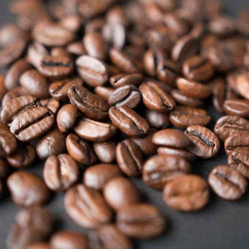
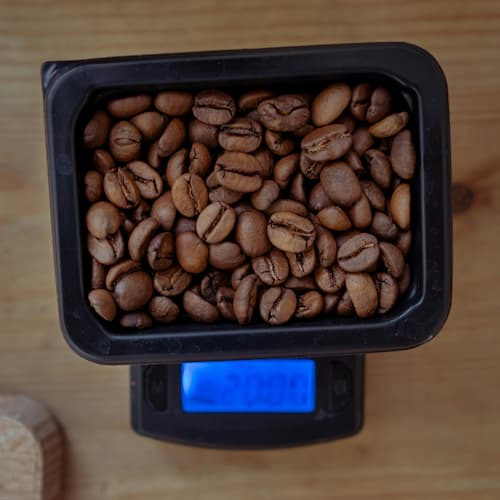
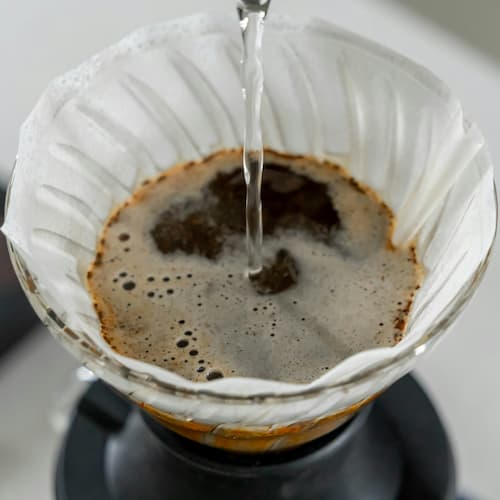
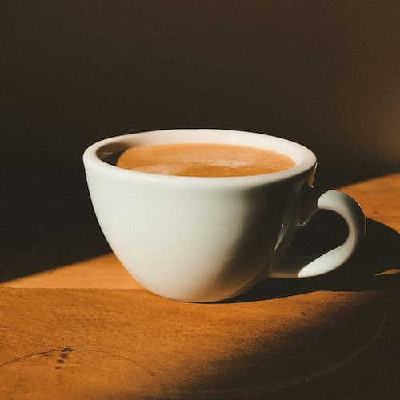

How to Make a Good Coffee
Follow these simple steps to brew the perfect cup at home.
Coffee is a language in itself.
-
Choose Quality
BeansStart with freshly roasted, high-quality beans. Grind them just before brewing for best flavor.
 -
Measure
ProperlyUse a scale to measure your coffee and water. A good ratio is about 1:15 (1g coffee to 15g water).
 -
Use the Right Water Temperature
Heat water to around 90-96°C. Too hot or too cold can ruin the extraction.
 -
Brew and Enjoy
Use your preferred method: French press, espresso, pour-over... and enjoy every sip.

Coffee Data
Explore some common types of coffee and their properties:
| Type | Origin | Caffeine Level | Flavor Notes |
|---|---|---|---|
| Arabica | Latin America | Medium | Sweet, fruity |
| Robusta | Africa / Asia | High | Bitter, strong |
| Blend | Colombia + Vietnam | Medium-High | Balanced |
| Special mix commonly used for commercial espresso | |||
| Source:International Coffee Association | |||
Tips for the Perfect Brew
- Experiment with different brewing methods.
- Store your beans in an airtight container.
- Clean your equipment regularly.
- Enjoy your coffee with friends!